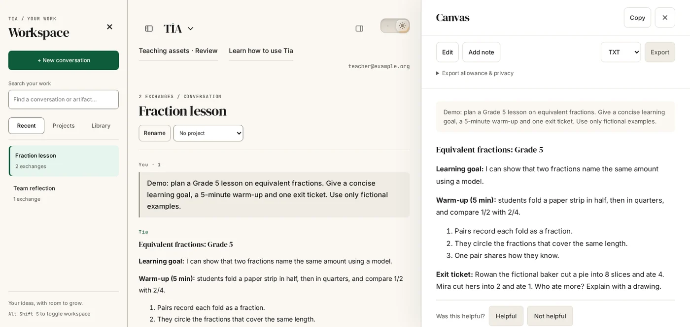
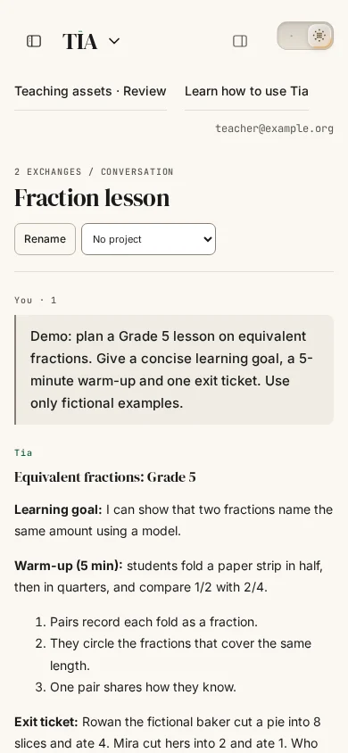
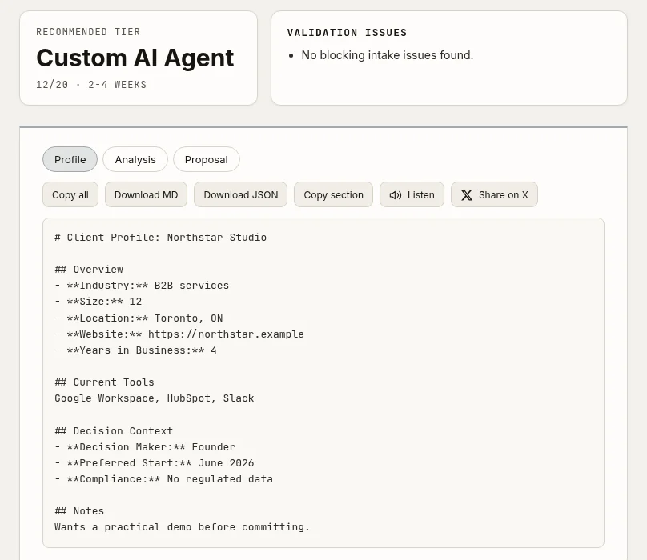

Product · Partner ecosystems · AI systems
Enterprise experience.
Practical AI systems.
I bring 10+ years in product management, partner ecosystems and commercial operations to building tools for the work I know.
I define the architecture, direct AI-assisted implementation, and personally test and validate the result. The work below shows the systems, the decisions and the evidence behind them.
 BatonHand-off CLI$ baton pass builder "the ads backfill finished — 412k rows, want the diff?"
BatonHand-off CLI$ baton pass builder "the ads backfill finished — 412k rows, want the diff?"01K2F7Q8VZ3NBRJ4WYD6XM0AHC
# the id comes back from the hub, not the client.
# a send that could not be recorded fails, loudly.Placeholder · CLI from the Baton README

 BespokeNative chat capture
BespokeNative chat capture


Selected builds / 2026Move across to browse
Index / Case studies
Selected builds
Bespoke · DIA
Case Studies & Builds
01 / From problem to systemBespoke
Operator-controlled reading, voice interaction and desktop actions — a local tool for moving between the written word, conversation and repeatable steps.
The operator stays in control of each mode: speaking text, asking a turn, a live conversation, or replaying a verified desktop step against a durable target. Replay follows the operator’s selected approval mode.
Baton hand-offs run as a Bespoke surface: routing and coordination between agents, so work can move through the wider environment without a separate case study here.
Local implementation · source remains private
Scope & what this is not
The repository implements both turn-based ask and a separate real-time live mode. The latter streams audio over a websocket and flushes playback when interrupted.
Verified step recipes and durable targets describe the local implementation; they do not establish independent operation or client deployment. This is not a public release, and it is not presented as a full accessibility screen reader.
DIA
A questionnaire becomes a scored opportunity and three useful documents.
A deterministic pipeline handles parsing, validation, scoring and document generation. A Gemini agent uses those functions as tools.
I brought together the workflow, interface, document generation, testing and deployment for the Google for Startups AI Agents Challenge.
Workflow illustration · not a product screenshot
Design decisions & what to inspect
The deterministic path makes the scoring and generated documents inspectable without relying on a model response. The agent can call the same functions rather than invent a separate scoring process.
In the demo, use Load Sample to inspect the synthetic questionnaire and generated documents. The live agent is a separate path; a working deterministic demo does not establish model availability.
The public repository includes parser and scoring logic, fixtures, tests and an evaluation harness. See the dated build record ↓
Blackboard
A visible record of work across people and agents.
A local viewer for file-based events: handoffs, shared artifacts and activity across the fleet. I use it in my own environment and refine it through practice.
The record remains readable even when the viewer is down.
Events are plain JSON files. This describes the local implementation; there is no public demo here.The build record
02 / Selected evidenceA few dated implementation steps. Open a note for the scope and source behind it.
06–09 Jun
2026DIA: from public demo to capture toolingPublic commits and a scoped historical test record
- 06 Jun · 19:43
- Initial public demo. The commit contains the parser, scoring, document generation, web interface and tests. Commit
- 09 Jun · 01:01
- Capture integration. The original integration note records 26 passing tests across three named test modules. This is a historical result, not a current full-suite total. Original note
- 09 Jun · 02:37
- Capture made opt-in. The implementation gates OBS capture behind an explicit setting and catches failures so they do not break the intake response. Implementation
Times shown in EDT (UTC−04:00), from the original commit records. No elapsed-time or submission claim is inferred.
27–28 Jul
2026Amazon Ads: a queryable reporting pipelineAPI retrieval → durable storage → console-export ingestion
- 27 Jul · 23:53
- Report retrieval. A v1 API client creates or resumes a report, waits for completion, then downloads it.
- 28 Jul · 00:41
- Durable data layer. Parquet snapshots feed a rebuildable DuckDB store and a read-only query interface.
- 28 Jul · 00:57
- Console-export support. An additional ingestion path normalizes exported report columns and handles year-month periods.
EDT (UTC−04:00). Implementation checked against the corresponding local repository revisions. These are engineering milestones; account data, client outputs and commercial performance are excluded.
08 Oct
2026Bespoke: repeatable desktop actionsLocal implementation · verified step recipes and durable targets
Work on remembering a step after its result has been checked, then replaying it against a durable target. Replay follows the operator’s selected approval mode.
Internal implementation record; source remains private. This is not a public release, a client deployment or a measured productivity result.
16–23 Oct
2026Family TreeNwakwesi family record: tree, timeline, scrapbook, suggestions
- 16 Oct · 01:06
- v0.1. Family tree app: pure-black interface, a sourced JSON record, CLI and queue backend.
- 16 Oct · 05:47
- The gate (v0.10). Splash open to anyone; data, photos, pages and writes need a member the owner has let in. Invite codes with a five-try lockout followed at 06:03.
- 16 Oct · 06:25
- Sign-in (v0.11). Password after first sign-in, Google sign-in, owner role by email, home-screen path and PWA manifest.
- 16 Oct · 12:00
- The record as a database. CSV and DuckDB export with views and an xlsx; owner and public scopes.
- 16 Oct · 15:31
- v0.17. My view / Family view switch, a wider People table with phone cards, and the Scrapbook gallery.
- 17 Oct · 00:03
- v0.18. Scrapbook search, tags, tag filter and ordering.
- 17 Oct · 03:14
- v0.19. Owner-only missing list, folded house rules, Telegram notices and ask-to-join.
- 18 Oct · 11:11
- Admin workspace. Profile workspace and canonical admin identity (PR #1).
- 20 Oct · 04:36
- Timeline and sprouts. A linear bar of years above the dated facts; sprouts on the couple connector. A “What changed” bell with a regenerated changelog followed the same morning.
- 20 Oct · 07:07
- Critique pass. Impeccable critique snapshots recorded for every view during the day, with fixes applied across the tree, people, scrapbook, suggest and about views.
- 21 Oct · 23:03
- Security pass. No lockout by wrong codes, sessions turn over on reset, every sign-in door throttled, CSP and transport protections.
- 22 Oct · 02:59
- v0.20: DMs. Family messages with a floating envelope, groups of five, a 30-day window, Web Push and expiring attachments.
- 22 Oct · 04:05
- Password reset by email. Sent from navy@bashsystems.net; the same answer for every address, so nothing leaks.
- 23 Oct · 04:01
- Chat file drag-and-drop. Files can be dropped into an active chat (PR #3).
Times shown in EDT (UTC−04:00), from the original commit records. No elapsed-time or submission claim is inferred.
23 Oct
2026DIAPersona v1.2, the Savant scoring build, Vertex-only model access
- 23 Oct · 07:50
- Tia’s UI shell. DIA takes Tia’s interface shell and gains a command palette (PR #32).
- 23 Oct · 08:03
- Persona v1.2. Analyst voice, follow-up drafter, Assistant mode and clean exports.
- 23 Oct · 08:22
- Savant questionnaire. Section 6 (Q1-Q11) with parser aliases; scorer v2 followed at 08:24 with value at stake, bands, flags and adjustments.
- 23 Oct · 08:31
- Answer-first documents. One report model drives the on-screen answer and the PDF with Exhibit 1 (08:37).
- 23 Oct · 12:23
- Pricing removed. Tier prices removed from all client-facing output, matching the BASH site.
- 23 Oct · 13:23
- Vertex AI only. API keys ignored; the deploy script drops the Gemini API key secret and sets the Vertex environment.
- 23 Oct · 13:28
- Current model default. gemini-3.8-flash; the 2.5-flash id was retired on Vertex on 2026-10-20. DIA_MODEL still overrides.
- 23 Oct · 13:52
- Ask DIA kill switch. ASK_DIA_ENABLED, off by default (PR #41).
- 23 Oct · 20:19
- Design review fixes. Glyph’s review items 1-6 from PRs #38-#40 (PR #46).
- 23 Oct · 21:08
- Prompt bar v2. Slimmer bar, icon-only audio toggles with hints, no pills (PR #45).
- 23 Oct · 22:12
- Ask DIA lockdown v2. Google sign-in required, with 10+5 daily limits (PR #48).
Times shown in EDT (UTC−04:00), from the original commit records. No elapsed-time or submission claim is inferred.
11 Oct–15 Nov
2026TiaOutput canvas, gated exports, a hardening wave and the workspace rebuild
- 11 Oct · 05:48
- Grounded research. Vertex AI Search grounding with citations, a weekly research job and a tools proposal (PR #20).
- 19 Oct · 03:34
- Teaching asset delivery. Buyer-bound private delivery of teaching assets; Lite and Complete one-time offers defined at 04:26.
- 20 Oct · 05:45
- Educator review catalog. Prepared with cloud delivery closed (PR #23); sign-in simplified the same morning (07:03).
- 23 Oct · 07:45
- Plus menu and command palette. One action registry behind the + menu and Ctrl/Cmd K (PR #28).
- 23 Oct · 11:52
- Dictation. Ported from DIA: the mic fixed in the composer corner, Send fading in beside it (PR #30).
- 23 Oct · 13:51
- Model defaults. gemini-4-argon on Vertex (global/us/eu), with an explicit max-output-token cap on every model call at 13:56.
- 07 Nov · 20:08
- Output canvas. A right-side canvas for output; bounded reference attachments followed at 23:44 (PRs #34-#35).
- 08 Nov · 01:27
- Canvas editing and gated exports. Editing notes on the canvas; exports gated to admins and VIPs, with a VIP allowance of ten per day (PR #36).
- 08 Nov · 02:08
- Isolated staging. Explicit named Datastore databases for staging (PR #37); export hardening followed at 02:31 (PR #38).
- 09 Nov · 16:26
- Membership and quotas. Membership reconciled and durable chat quotas enforced (PR #45).
- 10 Nov · 12:11
- Hardening day. Auth, storage admission, operator console and delete-user fixes landed and merged (PRs #48-#55); an account-scoped conversation workspace with branching followed at 12:33 (PR #56), and an in-app admin live monitor at 15:03 (PR #59).
- 11 Nov · 01:23
- Keyboard-first workspace. Alt+1..9 conversation switching and Alt+Shift section shortcuts (PR #65).
- 11 Nov · 13:50
- Drive import. Google Drive import and Canvas Save to Drive (PR #69).
- 12 Nov · 11:05
- Readable responses. Response readability and safe structured rendering (PR #73); response actions followed at 14:53 (PR #76).
- 13 Nov · 00:17
- Slides in Canvas. Google Slides decks open in independent Canvas tabs (PR #74).
- 13 Nov · 17:05
- Thinking orb. A subtle orb while a reply is in flight (PR #79); workspace layout (PR #80) and scroll refinement (PR #81) merged the same day.
- 14 Nov · 07:30
- Chat-first teaching. First-use teaching prompts and replies made chat-first (PR #83).
- 14 Nov · 19:13
- Staged release tooling. Exact-image zero-traffic Cloud Run staging and a single-use signed traffic promotion for the tested candidate.
- 15 Nov · 03:28
- Ten UI refinements. Workspace controls, account rail and request feedback (PR #86); a theme-aware glass account rail followed at 11:16 (PR #88).
Times shown in Toronto local time — EDT (UTC−04:00) to 01 Nov, EST (UTC−05:00) after — from the original commit records. No elapsed-time or submission claim is inferred.
09 Oct–17 Nov
2026BespokeMini-cursor chat, native capture and artefacts; the Navy companion
- 09 Oct · 11:10
- Six work orders merged. PRs #57-#63 land together: spec sync and review-fix behaviours with their evidence. Board v63, guide egg 1.8.0.
- 09 Oct · 11:41
- Site maps. Setup protocol, template and format test; the first map is en.wikipedia.org (PR #64). Guide egg 1.9.0 carries them.
- 18 Oct · 03:27
- Bespoke notify. Sound, toast and a spoken line for fleet tools.
- 03 Nov · 21:26
- Mini-cursor chat. A chat gateway for native agent sessions; dedicated Antigravity CLI sessions followed, with a confirmed round trip recorded at 23:41.
- 04 Nov · 00:19
- Glass palette. The agent cursor chat redesigned as an interactive glass palette; sessions, attachments and voice added the same day at 18:14 (PR #74).
- 05 Nov · 12:45
- Companion activity. Selected-session activity in the mini-cursor companion; chat monitoring suspends across Windows session changes (12:31).
- 06 Nov · 15:55
- Share pipeline. Persisted share sessions and bounded image intake; a native annotation editor with flattened redaction at 20:19 and explicit local OCR at 20:57.
- 07 Nov · 00:07
- Artefact outputs. Validated HTML and PDF artefacts created and previewed; Markdown, Word and image outputs followed (01:08-02:11). The native capture and artefacts work merged at 21:01 (PR #83).
- 08 Nov · 14:26
- Glass surfaces. Bespoke glass surfaces refined and workspace navigation unified (PR #86).
- 16 Nov · 19:17
- Navy companion. An ambient companion with docking and persistent size (PR #89); a passive hover menu and upright jet flight followed at 22:40 (PR #91).
- 17 Nov · 00:46
- Two-axis Navi motion. The horizontal orb-push pose (PR #92).
Times shown in Toronto local time — EDT (UTC−04:00) to 01 Nov, EST (UTC−05:00) after — from the original commit records. No elapsed-time or submission claim is inferred.
09 Oct–16 Nov
2026BASH sitebashsystems.net: services, the clay launch, booking routes and one intake
- 09 Oct · 02:27
- Hourly services. Social media management and ops consulting added to services; a Cloudflare Web Analytics beacon staged.
- 09 Oct · 05:41
- Light theme. The theme inverted to near-white paper and near-black ink; all prices removed the same hour and replaced with contact-for-pricing links.
- 09 Oct · 05:42
- Proof trimmed. Proof entries cut to what was built; DIA, the Amazon Ads pipeline, Blackboard, Baton and Bespoke added.
- 10 Oct · 01:51
- Hourly services merged. PR #21; keyboard-focus, heading-visibility and wordmark fixes followed (PRs #23-#26).
- 19 Oct · 04:18
- Clay characters launch. Clay characters and the public website assistant go live (PR #27); the assistant grounded in the public portfolio at 04:25.
- 22 Oct · 17:45
- Navigation refinement. Approved navigation and service presentation (PR #35); audit and educator booking requests routed from Services at 21:57 (PR #36).
- 23 Oct · 14:36
- CI gate. Baseline tests, lint and build in CI (PR #38).
- 11 Nov · 23:36
- Tia pages. Tia landing and privacy pages added (PR #40).
- 12 Nov · 14:53
- Workshop booking. Workshops and seminars booking moved to Typeform (PR #41); the approved EDU AI training landing page followed at 21:05 (PR #37) and deployed in a coordinated release on 13 Nov at 00:18.
- 16 Nov · 09:04
- One intake. Services, contact and the site assistant all point BOOK AUDIT at the generic Bash intake (PRs #43-#45).
- 16 Nov · 20:23
- Social preview. Open Graph preview image and verified social links (PR #46).
Times shown in Toronto local time — EDT (UTC−04:00) to 01 Nov, EST (UTC−05:00) after — from the original commit records. No elapsed-time or submission claim is inferred.
23 Oct–17 Nov
2026ComponentsThe UI/UX catalog: icons, prototypes and license-checked reference sections
- 23 Oct · 03:56
- Vendored libraries. The open-source component libraries found through X posts vendored in (PR #1).
- 04 Nov · 22:30
- Icon set. 25 stroke-style SVG UI icons; 25 more, an SVG sprite and a React Icon component followed at 22:50.
- 05 Nov · 12:38
- Frosted folders. A frosted-folders demo and reusable file patterns.
- 14 Nov · 11:34
- Reference sections. 39 researched free animation libraries filed; a fonts and typography section at 11:48; 40 license-checked CSS style systems at 19:15; 43 license-checked colour palettes at 19:16.
- 15 Nov · 11:03
- A day of references. Fourteen reference filings from Instagram reels: surface-stable fractal dithering, a glass dashboard, a WebGL koi landing page, ASCII pieces, a portfolio-as-a-device and more.
- 16 Nov · 08:52
- Bombas fonts. Conforto, Cabrio Poster and Decoy Light filed.
- 17 Nov · 18:24
- Inspiration sites. Eight design-inspiration sites from the Teleanu roundup filed: Inspora, Refero, Land-book, Godly, Minimal Gallery, Siteinspire, Mobbin and an Are.na collection.
Times shown in Toronto local time — EDT (UTC−04:00) to 01 Nov, EST (UTC−05:00) after — from the original commit records. No elapsed-time or submission claim is inferred.
16–17 Nov
2026Navy’s Petting ZooA new repo: the cast, their reactions, and a day/night world
- 16 Nov · 09:20
- Repo and page. The Petting Zoo page, with the character library behind it: all 65 sprite maps plus a PNG renderer (09:24).
- 16 Nov · 09:40
- Cast sharpened. Palette cleanup, speckle removal and a gentle edge treatment across all 65 maps.
- 16 Nov · 19:37
- Reactions complete. Happy frames for all 6 Navis; startled frames for all 7 pets.
- 16 Nov · 19:57
- Phase 2. Sleep frames and a day/night cycle, eating frames, and press-and-hold petting.
- 17 Nov · 00:16
- Phase 3. Species behaviours: a nocturnal bat, gliding dragons, a fox pounce, grasshopper big hops and a lion lounge.
- 17 Nov · 01:27
- Phase 4. Props and depth: tree, bush, rocks, pond, bowls and tufts; painter-order depth by ground line, with footprint and pond collision.
Times shown in EST (UTC−05:00), from the original commit records. No elapsed-time or submission claim is inferred.
23 Oct–15 Nov
2026This sitecultivatedco.ca itself: the business card and the November redesign
- 23 Oct · 02:25
- Business card. A responsive business card added and refined through the day; a CI gate baseline (tests, lint, build, smoke and visual gate) added at 14:32.
- 14 Nov · 15:47
- Redesign. The poke-able 3D business card as a full-screen overlay (PR #13) and the portfolio redesign: intro, stills, selected builds, contact (PR #14). A sticky side-rail table of contents followed at 18:31 (PR #15).
- 14 Nov · 18:59
- Fluid layout. Full-width fluid layout, the $75 consultation rate and card click-throughs (PR #16).
- 15 Nov · 05:09
- First paint. First-paint intro, SEO assets, a compact rail and Bespoke-led case studies (PR #17).
Times shown in Toronto local time — EDT (UTC−04:00) to 01 Nov, EST (UTC−05:00) after — from the original commit records. No elapsed-time or submission claim is inferred.
10 Oct–13 Nov
2026Supporting systemsThe smaller repos the main work runs on
- 10 Oct · 07:59
- Quote system (agnt-ws). The quote-system skill added with the Rico quote at rev8; the ledger records BS-Q-2026-001 rev8 sent the same day. The five-pager template was parameterized at 12:05.
- 18 Oct · 02:23
- Baton local mode. serve --local, baton use and dead-lock recovery; session receivers, wake-up and read receipts followed at 03:26.
- 20 Oct · 07:00
- Homebase import. The private Homebase suite and the managed VPS agent gateway imported; voice and attachment workflows for the agent workspace added at 09:19.
- 23 Oct · 14:42
- Fleet CI baseline. The same Gate baseline (tests, lint, build) lands across Bespoke, DIA, Tia, the Family Tree, Agent Eggs, Baton and Blackboard inside the same minute.
- 12 Nov · 05:42
- Press themes. Dossier code kept readable in light themes; accessible theme text separated from brand accents (PR #1).
- 12 Nov · 09:24
- Cult-Shared-Mind fixes. Dependency pins repaired and authenticated query routing fixed on VPS CI (PR #16).
- 13 Nov · 09:52
- Job Scoping repo. The Job Scoping playbook plus the Black Star Towing engagement files; PDF deliverables and card variants followed inside the hour.
Times shown in Toronto local time — EDT (UTC−04:00) to 01 Nov, EST (UTC−05:00) after — from the original commit records. No elapsed-time or submission claim is inferred.
Tools I work with
03 / The supporting systemsBespoke
Operator-controlled reading, voice interaction and desktop actions. A local tool for moving between the written word, conversation and repeatable steps.
Local implementation- speak
- Read text with playback controls.
- ask
- Answer a prompt, then speak the response.
- live
- Stream microphone audio and native audio replies, with interruption handling.
- cursor
- Desktop actions with durable targets and verified step recipes.
Scope & implementation
The repository implements both turn-based ask and a separate real-time live mode. The latter streams audio over a websocket and flushes playback when interrupted.
Desktop replay follows the operator’s selected approval mode. Verified step recipes and durable targets describe the local implementation; they do not establish independent operation or client deployment.
This portfolio describes implementation work, not a new end-to-end microphone or latency test. It is not presented as a full accessibility screen reader.
Baton
Routing and coordination between agents, supporting how work moves through the wider environment.
Working locallyAgent Eggs
Portable context and capabilities, packaged so useful knowledge can travel between environments.
Reusable context packagesResearch & writing
04 / The thinking behind the workdPKL is the foundation of how I think about AI systems. These four connected works explore knowledge, execution, the operator’s role and human autonomy.
The Deterministic Personal Knowledge Layer (dPKL): Agents as the Interface to Deep Execution
A local-first approach to making working knowledge portable and queryable, with agents acting as an interface to execution.
What Expectations? AI, Telecommunications, and the Tool It Always Was
AI as infrastructure and a tool, with human judgment shaping how its capabilities are used.
Agents Are Your New Mouse and Keyboard: An Operator’s Doctrine for Driving Agents
An operating practice for directing agents through command-line tools, documentation, reusable capabilities and human validation.
What Autonomy Is, and Why It Remains Exclusive to Humans
A philosophical argument for keeping purpose and responsibility with humans, and designing agents for bounded, reliable execution.
The ideas and operational experience are mine; each work discloses agent-assisted prose and formatting. Full texts are not published here.
Where the judgment comes from
05 / Enterprise experienceProduct lines, partner programs and commercial operations taught me to account for the messy parts: incomplete information, handoffs and competing priorities.
That experience shapes the problems I choose, the systems I design and what I check before calling something useful.
Put a workflow to work.
06 / Work with meHave a recurring workflow that needs attention? I work on business automation through BASH. Start with one task, agree to the scope and acceptance checks, and then build from there.
Bash Systems rates, CAD/hr: Consultation $75 · Project $155 · Advanced technical $215.
navy@bashsystems.net